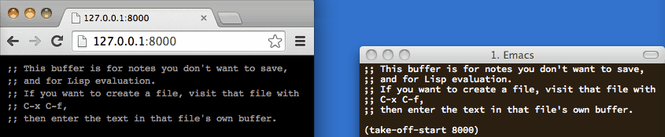
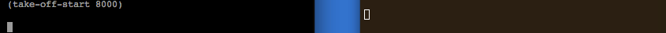
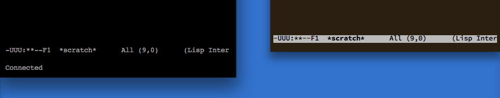
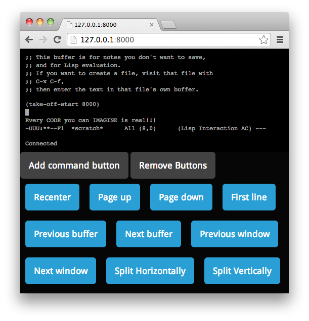
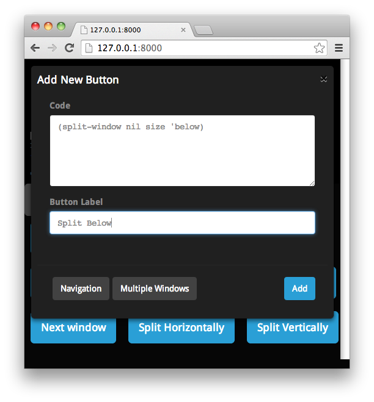
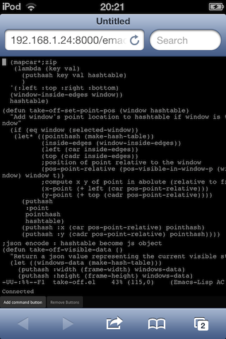

Interact in real-time with emacs



Use buttons
Define arbitrary commands to execute at the touch of a button. 
Control from any device
You can swipe to scroll and change the displayed file.
Do you actually want to use it?
This project was conceived to get acquainted with emacs extensibility. It is a functional but (very) rough cut. Caveat adeptor.
It's not secured. Shortcuts must be typed in one go. Rendering do not matches emacs. All shortcuts are stolen. Changes performed from emacs are not automatically reflected in the web client.
Patches welcome.